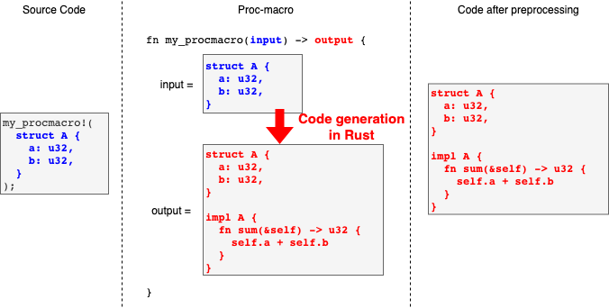

Compile-time linter for Redis Lua script in Rust
This is the article for the 5th day of qiita advent calendar.
It's about my WIP hobby project I've just started.
Introduction
Lua scripting in Redis
Redis is a well-known high-performance key-value store. One of its interesting feature is Lua scripting.
Redis has eval command. With the command, you can let redis run a Lua script. The following example creates 5 keys by Lua script.
$ redis-cli
> eval 'for i=1,5 do redis.call("set", "key"..i, "value"..i) end' 0
(nil)
> keys *
1) "key1"
2) "key2"
3) "key3"
4) "key4"
5) "key5"
This feature is convenient when you want to quickly run a complicated combination of commands, especially when some commands are conditional.
Plus, we can use this feature to achieve atomicity of a set of commands as the Lua script is executed atomically.
Using Redis Lua in Rust
In Rust, there's the nice redis client library, redis-rs.
let client = redis::Client::open("redis://localhost:6379").unwrap();
let connection = client.get_connection().unwrap();
redis::cmd("set")
.arg("gay")
.arg("bar")
.query(&mut connection).unwrap();
The library of course supports Lua scripting.
let client = redis::Client::open("redis://localhost:6379").unwrap();
let connection = client.get_connection().unwrap();
let script = redis::Script::new(r"
return ARGV[1] + ARGV[2];
");
script
.arg(3)
.arg(9)
.invoke(&mut connection);
So, we can easily leverage redis Lua scripting features in Rust. However, while Rust is a safe language, Lua is not. Even though Rust compiler points out most of the problems in your Rust code at compile time, Lua doesn't. Yes, it's an interpreter so we cannot know until we actually run it.
So, we often suffer from runtime problems in the Lua part even though the super Rust compiler is beside you. Additionally, debugging in redis Lua script is a bit troublesome. Typical mistakes we make are:
- Missing arguments.
let script = redis::Script::new(r"
return ARGV[1] + ARGV[2];
");
script
.arg(3)
.invoke(&mut connection);
- Undefined something.
let script = redis::Script::new(r"
local a = ARGV[1]
module_bar.rocks(gay) # Why does the gay rock in the bar?
return 1 + a
");
- The syntax is wrong.
let script = r#"
local (ノ ﾟДﾟ)ノ ＝＝＝＝ ┻━━┻ = ARGV[1]
"#;
redis-lua
To mitigate this problem, I've started making the library redis-lua.
With this library, we can do the following things:
- Compile-time lint
With this library, you can write Lua script in the following way.
let script = lua! {
return 1 + 2 + 3;
};
script.invoke(&mut connection);
The library runs a linter against the Lua script and reports mistakes in the script at the compile time.
let script = lua! {
return 1 + 2 + x;
};
$ cargo build
...
error: in lua: `x` is not defined (undefined_variable)
--> redis-lua/examples/simple.rs:11:41
|
11 | return 1 + 2 + x;
| ^
error: aborting due to previous error
It's like ordinal Rust compile error messages. The wrong part is high-lighted, showing the line numbers and file names.
- Safe arguments passing
You can directly pass Rust variables as arguments in the script.
let x = 39;
let y = 42;
let script = lua! {
local x = @x;
return x * 2 + @y;
};
// You'll get the result of `39 * 2 + 42`
You don't have to worrying about the mismatching between the number of arguments you pass and the number of ARGV in the script.
Also, if you pass the variable which isn't defined in the Rust side, the compile error lets you know that.
You may want to reuse the same script, changing the arguments.
The library supports such case. If you use lua_f macro instead of lua macro, the argument variabls can be set later.
But the resulting script object forces you to set all the arguments. You cannot call invoke until you set all the required arguments.
If you miss one, the compile error tells you that.
let script = lua_f!(
local v = @a * @b * @c
if v > 50 then
return v .. " > 50"
else
return v .. " <= 50"
end
);
for i in 0..4 {
let s: String = script
.a(15) # You cannot omit these methods `a`, `b`, `c`
.b(i)
.c(3)
.invoke(&mut connection).unwrap();
println!("{}", r);
}
How it's implemented
Use linter in proc-macro
let script = lua! {
return 1 + 2 + 3;
};
script.invoke(&mut connection);
The approach is to use proc-macro and run a Lua linter inside. lua! macro is a proc-macro.
proc-macro
proc-macro is advanced macro feature which allows you to write macro logic itself in Rust. Like normal macros, it is a preprocessing logic which takes Rust code syntax as an argument and generates another Rust code, but inside proc-macro, you can program its logic using the full functionality of Rust, using any Rust crates.

So, inside proc-macro definition, we can run a linter crate as well. To perform lint, Lua proc-macro does the following steps:
- Convert input Rust code to a string.
- The input of proc-macro is kind of a list of tokens.
- So the library convers it to a string like
"return 1 + 2 + 3;".
- Run linter against the string.
- If the linter detects an error, we can cause a compile error.
- Compiler errors can be triggered by calling
panicor using a diagnostic feature, which I mention later.
- Return a generated code.
- It just creates
Scriptinstance ofredis-rslikeredis::Script::new("return 1 + 2 + 3").
- It just creates
fn lua(input: TokenStream) -> TokenStream {
// The argument type is `TokenStream`,
// which is basically a list of tokens in Rust.
// First, convert Rust code to a string.
let s = input.to_string();
// Run linter against it.
run_linter(&s);
// Here generate resulting code.
quote! {
redis::Script::new(#s)
}
}
Selene
The library uses selene Lua linter. The linter can detect various errors such as undefined variables/modules, zero divison, shadowing parameters and etc.
We can easily customize standard modules and global variables which are available in scripts, so we can avoid undefined something errors of buitin functions or pre-defined global variables in Redis Lua context (such as cmsgpack, cjson, ARGV).
Here, rather than selene itself, I want to use its library part (selene-lib) because I just want to call linter logic from my proc macro.
While there's some documentation of selene as a binary, I couldn't find much about selene-lib. But we can easily find out the usage of the library by checking the selene code.
In the function which runs a linter, I did as follows:
- Parse the string as Lua script
- Actual syntax parsing for Lua is done by the crate
full_moon.
- Actual syntax parsing for Lua is done by the crate
- Pass the configuration to
selene-lib, which defines a standard modules and global varibles. - Run the linter.
- Report the error.
- Here we show compile warnings or errors. The details will be mentioned in the next section.
pub fn run_linter(script: &Script) {
// Parse the script by full_moon.
let ast = full_moon::parse(script.script()).unwrap();
let std = StandardLibrary::from_file(&as_path(&make_cfg(&self.defined))).unwrap();
let cfg: CheckerConfig<toml::value::Value> = toml::from_str(include_str!("selene.toml")).unwrap();
// Create a linter
let checker = SeleneChecker::new(cfg, std.unwrap()).unwrap();
// Run the linter
let mut diags = checker.test_on(&ast);
diags.sort_by_key(|d| d.diagnostic.start_position());
// Emit results as compiler messages
emit_diag(script, diags);
}
Improving error reports
If selene-lib finds errors, it returns the messages and position in the Lua script.
We could choose to just show them to library users as compiler errors. However, the position reported by selene-lib is not the position in Rust code.
So just printing it doesn't help the users who write the Lua script. Sometimes it's even misleading and confusing.
I want to report the position in Rust code, highligting the wrong part as Rust compiler does for our Rust code.
$ cargo build
...
error: in lua: `x` is not defined (undefined_variable)
--> redis-lua/examples/simple.rs:11:41
|
11 | return 1 + 2 + x;
| ^
error: aborting due to previous error
proc_macro_diagnostic feature
By using this feature, we can control messages in Rust compile errors. Every token given to proc-macro function has the information called span, which contains the position in the original Rust code.
pub fn my_procmacor(tokens: TokenStream) -> TokenStream {
for token in tokens {
let span = token.span();
// This causes compile error, highligting the token.
span.error("Unexpected token!").emit();
// Or, this causes warning.
span.warning("Suspicious token!").emit();
}
...
}
So, when the linter reports the error position, by finding out the corresponding span, we can create a nicer compile error/warning messages.
proc-macro limitation
There's a three type of proc-macro.
- Derive macros
#[derive(MyProcMacro)] // <- This struct Gay { bar: u32 } - Function-like macros
my_procmacro!(struct Gay { bar: u32 }); - Attribute macros
#[my_procmacro] // <- This fn bar() { }
Guessing from the shape, 2. looks what we want. However, there's the limitation that function-like proc-macro can be placed at only item position. Not at expression position.
use std::fmt::Display;
my_procmacro!(...); // <- Ok here.
fn main() {
let a = my_procmacro!("return 1 + 2"); // Not ok here...
}
If we want to put function-like proc-macro at the expression position, we can use proc-macro-hack.
#[proc_macro_hack] // This does the magic (hack).
pub fn lua(input: TokenStream) -> TokenStream {
...
}
let script = lua! {
return 1 + 2 + 3;
};
Safely passing arguments
How to capture variables from the Rust world?
let x = 39;
let y = 42;
let script = lua! {
local x = @x;
return x * 2 + @y;
};
From the code above, we want to generate this code by proc-macro.
let x = 39;
let y = 42;
let script = Script::new("local __local_v1 = ARGV[1]; local __local_v2 = ARGV[2]; local x = __local_v1; return x * 2 + __local_v2")
.arg(x)
.arg(y);
This is rather straightforward.
- First, collect the tokens which starts with the marker
@. - Generate the
let __local_vNpart for each marked tokens. - Generate the
arg(N)part for each marked tokens. - Concat the generated parts.
Partial lint
As I mentioned earlier, we can tell the linter to accept some pre-defined global variables to avoid causing undefined variables errors.
Here, if we just allow ARGV in the linter for the generated script, it isn't actually good. If a user writes the script like this,
the linter still doesn't complain, and we find the script fails at runtime.
let script = lua! {
return ARGV[42];
};
So, instead of allowing ARGV, I configure the linter so that it accepts only __local_vN and perform check against only the user's script: "local x = __local_v1; return x * 2 + __local_v2".
Generating reusable script object
To achieve the feature to create reusable script object, lua_f macro generates struct for each argument. For example, in the following case,
- Generate a struct which has the method
a()only - Generate a struct which has the method
b()only - Then, the method
b()returns a object which hasinvoke().
let script1 = lua_f!(
local v = @a * @b
if v > 80 then
return v .. " > 80"
else
return v .. " <= 80"
end
);
script.a(10).b(1).invoke(&mut connection).unwrap();
script.a(2).b(12).invoke(&mut connection).unwrap();
Actual generated code is as follows.
let script1 = {
enum ProcMacroHack {
Value = ( "local v = @ a * @ b if v > 80 then return v .. \" > 80\" else return v ..\n\" <= 80\" end" , 0 ) . 1 , }
{
struct ReusableScript(::redis::Script);
struct ___new_type_a<'a>(::redis::ScriptInvocation<'a>);
impl<'a> ___new_type_a<'a> {
fn a(mut self, v: impl ::redis::ToRedisArgs) -> ___new_type_b<'a> {
self.0.arg(v);
___new_type_b(self.0)
}
}
struct ___new_type_b<'a>(::redis::ScriptInvocation<'a>);
impl<'a> ___new_type_b<'a> {
fn b(mut self, v: impl ::redis::ToRedisArgs) -> ::redis::ScriptInvocation<'a> {
self.0.arg(v);
self.0
}
}
impl ReusableScript {
fn a<'a>(&'a self, v: impl ::redis::ToRedisArgs) -> ___new_type_b<'a> {
let mut invoke = self.0.prepare_invoke();
invoke.arg(v);
___new_type_b(invoke)
}
}
ReusableScript ( :: redis :: Script :: new ( "local __internal_from_args_0 = ARGV[1]; local __internal_from_args_1 = ARGV[2]; \nlocal v = __internal_from_args_0 * __internal_from_args_1 if v > 80 then return v .. \" > 80\" else return v .. \" <= 80\" end" ) )
}
};
Misc
..is tokenized as two tokens.,.in Rust, while it's a single operator token..(string concatination) in Lua. So, the library converts input token stream into another stream with convenient form to processing it as Lua script.- Lua side comments
--may not work because new line information is lost during tokenization.- But we may be able to somehow salvage the information from span.
- Script caching is always enabled. Whether users use the reusable script
lua_for not,evalshais always attempted.
Summary
- Working on redis-lua.
- The library performs compile-time lint for redis Lua script.
- The libray supports safe arguments passing by capturing Rust variables in Lua script.